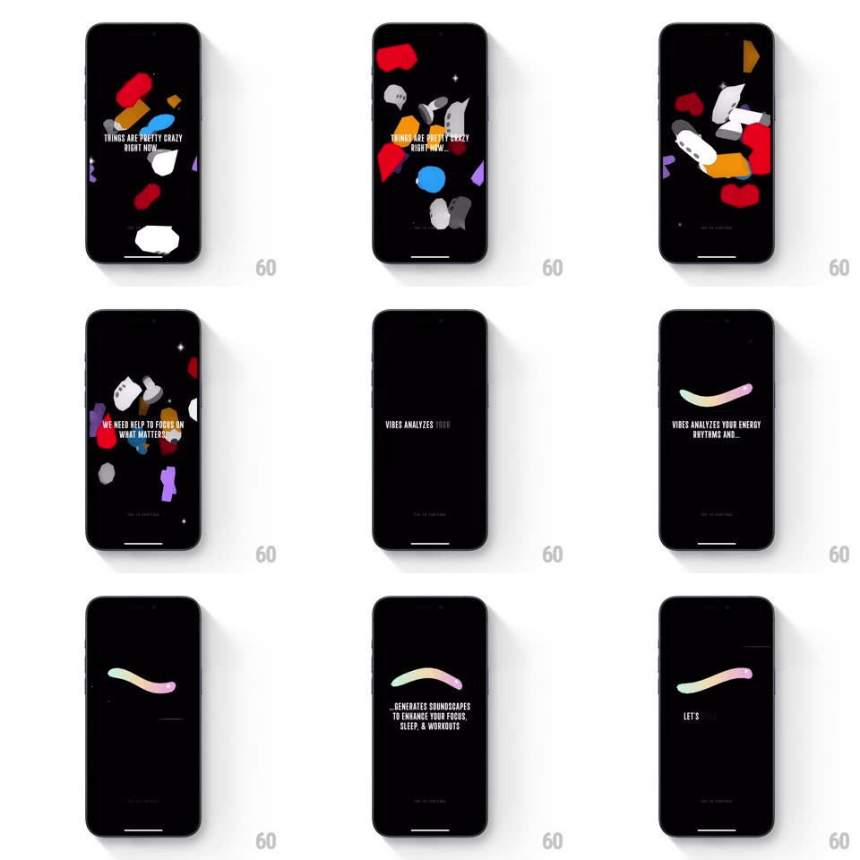

Media
Frame-by-frame

Rebuild this animation 1:1: Not Boring Vibes' onboarding - chaotic colorful 3D shapes swirl around the opening statements, then calm down and merge into a single smooth rainbow wave as the copy turns soothing.

Rebuild this animation 1:1: Not Boring Vibes' onboarding - chaotic colorful 3D shapes swirl around the opening statements, then calm down and merge into a single smooth rainbow wave as the copy turns soothing.
## Integration
Integration: stack-agnostic spec - springs given as stiffness/damping, timed motions as duration + curve; map every value to your framework and animation library of choice.
## Scene
Black background. Early beats: a swarm of colorful 3D shapes (red blobs, orbs, chat bubbles, shards) floats and tumbles around centered caps copy ("THINGS ARE PRETTY CRAZY RIGHT NOW", "WE NEED HELP TO FOCUS ON WHAT MATTERS"). Later beats: the chaos resolves into one silky horizontal gradient wave (green-yellow-pink) undulating under calmer copy ("VIBES ANALYZES YOUR ENERGY RHYTHMS AND...", "...GENERATES SOUNDSCAPES TO ENHANCE YOUR FOCUS, SLEEP").
## Motion spec
Pattern: chaos-to-calm resolution.
- Chaos phase: 10-14 shapes drift on independent slow paths (translate +-30px over 3-5s loops, random phases), each slowly rotating (tumble +-20deg); sparkles twinkle intermittently (opacity blink, 400ms).
- Statement transitions: copy swaps with a soft blur-fade (opacity + blur 8px to 0, 350ms) while shapes keep moving - the motion never cuts.
- The resolution beat: over ~1.5s the shapes decelerate, dim, and drift offscreen toward the edges while the rainbow wave fades in at center (opacity 0 to 1, 800ms) - one continuous slow-down, no scene cut.
- Wave phase: the wave undulates gently (amplitude +-10px, 4s period) with its gradient slowly flowing along its length (2 revolutions of hue drift per minute); copy lines fade up beneath it (translateY 10px, 250ms, staggered 120ms).
- Final beat holds: wave + copy + a small continue prompt.
## Calibration
- The emotional arc is the spec: busy and fast-ish early, slow and sparse late. Timing must slow down across the sequence.
- Shapes never overlap the copy enough to hurt legibility - keep a clear center column.
## Reduced motion
Static shapes, then static wave; copy crossfades.
## Don't miss
- The wave is a single organic stroke with a smooth rainbow gradient - not a line chart, not a waveform with bars.
- The transition moment (chaos calming into the wave) is the signature; it must feel like exhaling.